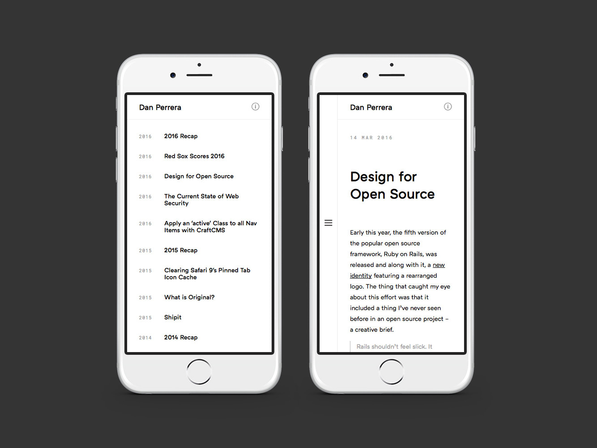

by Dan Perrera
It’s easy to understand why people like animation. We’re instinctually attracted to motion but I’ve always drawn a fairly hard line when it comes to including it in web design: use it as little as possible. Not because I don’t think it’s interesting, but because I believe that if it isn’t purposeful, it undermines, rather than supports, a viewer’s ability to read and absorb the content of a site.
That said, there is something undeniably cool about interface animation — especially when it’s used to help viewers understand a transition within or between pages — so I wanted to experiment with some of these effects.
Since this website is content focused and rarely updated (a situation that I aim to change), it seemed like the perfect test case. For this redesign, I attempted to challenge some of my own assumptions about animation and content presentation while still producing a great reading experience.
I chose ATC Arquette set in medium for headlines and regular weight for body copy because of its beautiful forms at large sizes and legibility at small sizes. It’s like a mashup of all the best features of Gotham and Circular (Fore Design’s brand typeface), down to the round dot on the lowercase ‘i’.
Roboto Mono lends a more technical feel and complements Arquette nicely as a supporting face.
I’ve moved the website from Craft to Jekyll since I had a delightful time working with it on the recent Fore Design and Shubox redesigns. Working with a static site generator feels faster, more direct, and less complicated since there are far fewer moving pieces compared with dynamic systems (which, frankly, are overkill for this project).
In the tradition of progressive enhancement, it was important to me that the site still function without JavaScript so, instead of using a full front-end framework to integrate animation into the interface, I chose to pair two purpose-built JavaScript libraries to make silky-smooth page transitions. Anime is a lightweight animation engine and Barba overrides typical link behavior, instead injecting the requested data into the current page.
An interesting benefit of this experiment was improved performance: initial page load is snappy since there are no calls to a database. Plus, the perceived performance of subsequent page loads is even better thanks to both Barba’s incremental page loading strategy and to Netlify, a hosting platform with a built-in content delivery network.

I had a lot of fun stretching my legs on this project and I’d love to hear what you think.